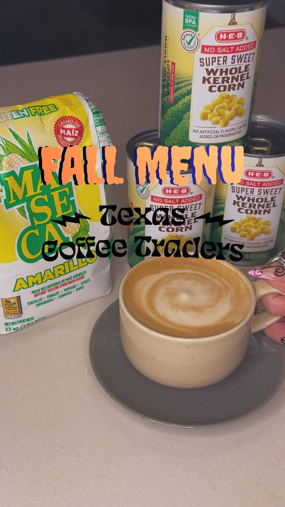
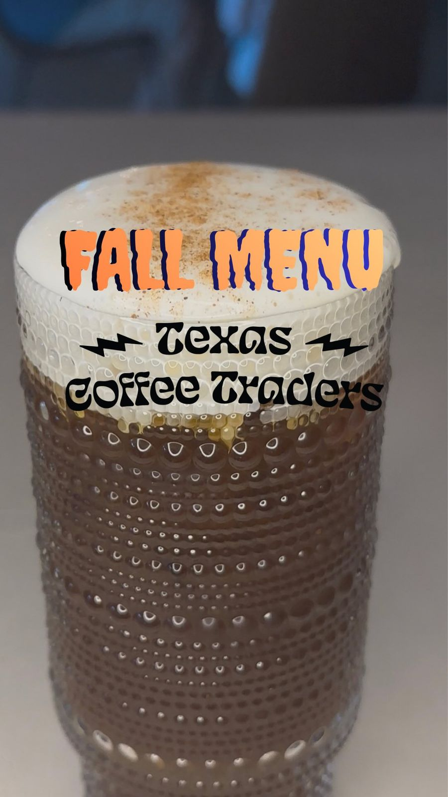
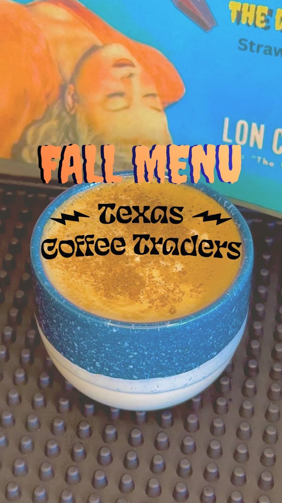
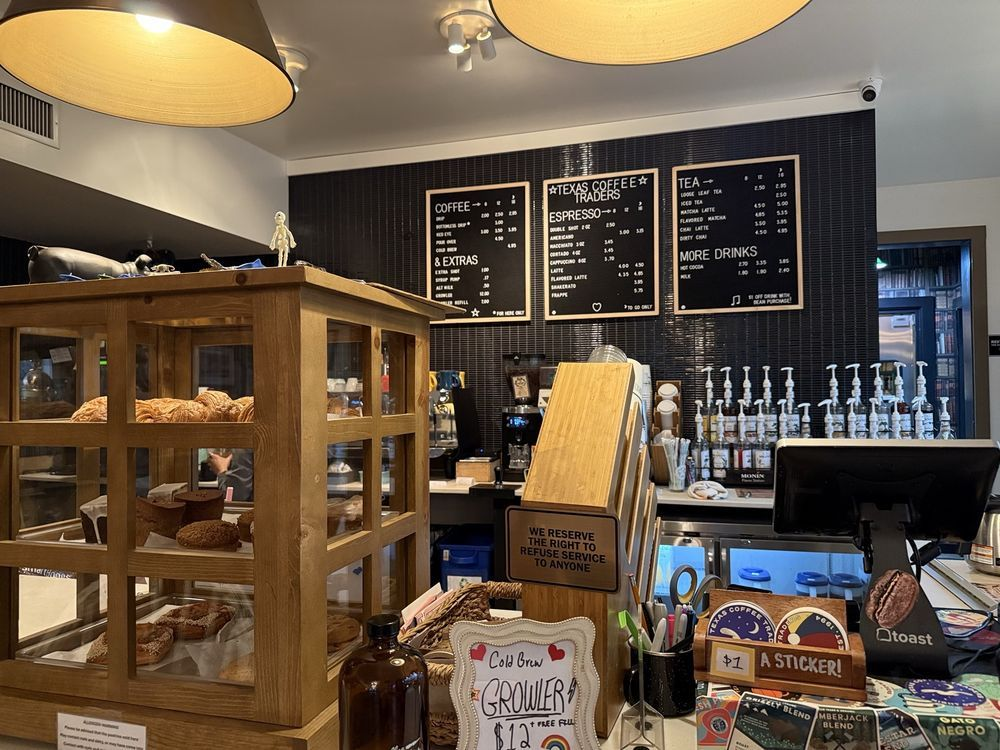

Cornbread Cappuccino
House-infused, soy-based corn milk. Subtle and sweet.
Insert herePriceAdd the fall-menu price from the cafe board.
Seasonal menu
House-made syrups and cold foams, around for a season and then gone. Follow @texascoffeetraders for the next menu drop.

House-infused, soy-based corn milk. Subtle and sweet.

Chocolate-forward cold brew with brown sugar cinnamon cold foam.

The “Werewolves of London” Earl Grey latte, a maple cortado, and pumpkin spice back by request.
Pastries & grab-and-go
Pastries in the case every morning (reviewers mention Sour Duck), weekend kolaches, snacks, and Coffee Traders cans in the cooler: Iced Coffee and our Gato Rubio Coffee Shandy, $5.00 a can or $18.00 a 4-pack.
